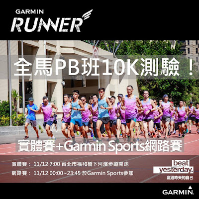

十公里測驗提醒與配速策略
2016 Garmin PB 班學員的測驗提醒
1、今天早點睡，明天起床後要喝足夠的水。
2、測驗前充分熱身：這只要跟著教練們做就沒問題了，請準時到。
3、最重要的一點：為了避免各位測驗受傷，測驗時要非常專注在動作上，在你的意識中，腳掌始終在你臀部的下方，只要你意識到腳掌跑到身體後面需要你「拉回」時就代表你的動作已經跑掉了，要提醒自已：每一步落下後就要立即回到關鍵跑姿(腳掌回到臀部下方的單腳站姿)。再來是拉的高度要盡量低，低到你可以維持自己的速度和節奏即可，以避免過度拉抬(over pulling)。如果你一直感覺腳在後面，這代表你在這個速度下的技術無法維持在標準跑姿的框框裡，這時你就要縮小落下角度，以避免因為過度跨步而受傷(因為只要拉起太慢，就代表一定存在過度跨步的問題)。千萬小心。你只要受傷了，過去幾個星期的努力就會白費、未來也無法和大家一起努力了！
4、最重要的第二點：在能維持跑姿的情況下，請盡全力跑！！當成比賽來跑。等著看大家的成績。
這一次測驗的目的並不是要大家大家破 10 公里 PB，目的是：要知道大家目前的實力，所以是個「前測」，重點是四個禮拜之後的測驗，有了前測才有比較的基準。第二個目的是讓大家有比賽的感覺，雖然禁止大家參加隨意全馬比賽，但太久沒比賽是不好的，會忘記比賽的興奮感。這次是有計畫的測驗，也是練習賽，請把它當成比賽來跑(但要注意動作，不要受傷)。
況且，這幾個星期都是以 E 強度的 LSD 為準，所以不太可能進步 (還是要盡力跑)；但如果明天就破 10 公里 PB 的人，代表你原本的有氧實力不好，所以光慢跑打底就進步了。
不可避免的，有可能還是有人跑完後有些微的不舒服。切記：所有的疼痛幾乎都是跑姿的問題，所以如果你有不舒服，請找教練查看跑姿，確認動作的問題在哪，以避免下一階段增加訓練強度後造成受傷。
當天會有教練團的夥伴幫所有參與測驗的正式學員拍下某一段跑姿(PB 班正式學員才會拍)。

十公里配速策略
策略就是不刻意配速！
測驗的目的就是要訓練比賽的感覺，比賽時最忌誨一直看錶，看錶時會分心，就無法專心在動作上。大家明天帶錶的目的只是把它當成晶片，還有事後搜集數據作為檢討與分析的載具，不是為了讓大家一直看(監控)用的。
好~~！那要怎麼訓練比賽的感覺呢？這部分跟科學比較無關，比較偏向訓練光譜中藝術的那一端，提醒幾個重點：
一、在心理上要把 7.5 公里處(最後一個水站)當成比賽的「中點」，換句話說，比賽中點不是 5 公里。要這麼想：到了 7.5 公里才算一半，之後還有一半要跑，因為前後的痛苦感是差不多的。
二、有可能跑到四十分以內的人，「中點前」可以用自我感覺的強度 4~4.5 區來跑，「中點後」可以拉到 4.5 以上；成績會跑到四十分以上的人，「中點前」用自我感覺的強度 3~4 區來跑，「中點後」會很痛苦，想像自己在 4 區附近。這裡所謂的自我感覺是盡量不看錶，依自我感覺的強度來跑即可(1 區是最輕鬆、5 區是最痛苦)，若你很不確定可以瞄幾眼。
三、全程專注在動作上，若痛苦感超過可以承受的範圍，身體就不要前傾那麼多，縮回來一點，腳掌拉起的高度再下降一點，直到自己可以負荷為止。尤其是「中點」之後心率會很高，此時不容易專心，但更要全神貫注在姿勢上：上半身是否打直、手臂有沒有放鬆、腳掌有沒有在身體後面(有的話要更專注在拉起)、每一步有沒有盡快回到關鍵跑姿。
四、專注呼吸！中國有句口訣說得極好：眼觀鼻，鼻觀心。「眼」是指：眼神收斂，不要東張西望，不要一直望著終點到了沒，不要想折返點，也不要想終點，不要看其他人跑者(跑得比我快或比我慢)。「鼻」是指：呼吸，呼與吸要順暢，像是進氣與出氣沒有分別般，綿延不絕，就算是高強度時也能做到，高強度只是呼吸的速度變快而已，但流暢度不能變。「心」是指：把心思專注在動作上，你的動作是由心所指揮的。動作走樣前，都是先心亂了的結果。
五、練習喝水。班主任小妞很貼心準備了水站。大家每一站都要喝水，這是一個重要的練習。因為到時在渣打馬時大家也要會邊跑邊喝水。(因為是邊跑邊喝，為了不亂丟垃圾，喝完後可以拿在手上，等下一個水站再丟。水杯是紙杯，不影響跑步)